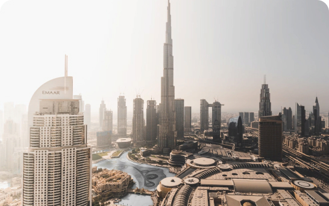

ИНВЕСТИЦИИ В БУДУЩЕЕ. КАК ИНФРАСТРУКТУРА РАЙОНА ВЛИЯЕТ НА СТОИМОСТЬ НЕДВИЖИМОСТИ В ДУБАЕ
Стоимость недвижимости в Дубае складывается из нескольких факторов: площади, планировок, класса жилого комплекса, наличия удобств и, конечно же, расположения. Последнее нередко играет определяющую роль: имеет значение как престижность и популярность района, близость к известным достопримечательностям и пляжам, так и наличие инфраструктуры.
Эксперты отмечают, что наиболее выгодными будут вложения в развивающихся районах, которые находятся в процессе застройки. Если же вы планируете приобрести недвижимость не для инвестиций, а для переезда на ПМЖ, логичней выбирать уже застроенные локации с готовой инфраструктурой и завершенным благоустройством. Однако такие варианты будут стоит дороже – и разница в цене может доходить до 5,5 раза.

MARITIME CITY
На данный момент район Maritime City – это практически пустой участок земли, где почти не велась
активная застройка, потому что не была готова инфраструктура вокруг. Немногочисленные здания, которые
там возведены, – это фактически высотки посреди пустыни. Однако сейчас в это направление приходит
крупный застройщик Emaar, который известен своими мастер-проектами и комплексным подходом к развитию
инфраструктуры, и другие девелоперы также заинтересовались данной локацией.
«Сейчас [идет] первый вагон этого паровоза, и нужно стараться в него запрыгнуть, потому что дальше
локация будет развиваться», – отмечает Руслан Шарипов.
Эксперт добавил, что при покупке недвижимости в развивающемся районе разумнее всего обращать внимание
на off-plan (строящиеся) проекты на ранней стадии: таким образом, развитие инфраструктуры района и
строительство здания будут идти параллельно, и к моменту сдачи дома вы получите новое жилье в районе с
развитой инфраструктурой.
В Maritime City таким проектом является премиальный ЖК Damac Harbour Lights. Проект запущен недавно,
окончание работ запланировано на II квартал 2027 года.
«До середины 2027 года инфраструктура вокруг будет активно развиваться, и по мере готовности здания
вся локация преобразится, ее ценность будет возрастать. Зачем сейчас покупать готовую односпальную
квартиру в этом районе за 2,5 млн AED (680 500 $), если можно зайти в проект, где цены начинаются от
1,32 млн AED (359 500 $), и заработать на приросте стоимости объекта», – отметил Руслан Шарипов.
Он пояснил, что готовым зданиям в этом районе к моменту окончания работ будет уже 8-9 лет, в то время
как здание Harbour Lights будет абсолютно новым. Это также существенно влияет на цену.
MARITIME CITY
Роскошный жилой комплекс станет жемчужиной побережья Maritime City. 52-этажная высотка с премиальными удобствами и эксклюзивным дизайном от лакшери-бренда de Grisogono расположится буквально у кромки воды. Можно приобрести просторные апартаменты площадью от 74 до 158 м2 с 1, 2 или 3 спальнями. Максимальная стоимость на начальном этапе не превышает 3,28 млн AED (893 000 $). Каждая резиденция имеет потрясающий вид на пристань и Персидский залив с белоснежными яхтами. Это блестящая инвестиционная возможность, которую можно назвать редкой даже для Дубая. Стоимость недвижимости здесь составляет около 14 500–18 500 AED (4000–5000 $) за 1 м2, тогда как в популярных и уже застроенных прибрежных сообществах Dubai Marina и Palm Jumeirah по данным на IV квартал 2022 года она составила порядка 38 500 и 35 000 AED (10 500 и 9500 $) соответственно/